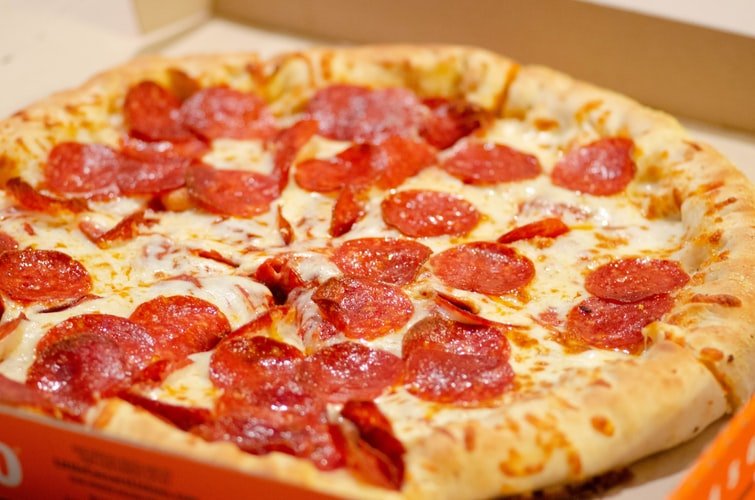

What is Khai dai?
We are a small team of problem solvers, designers, thinkers and tinkers, working around the clock to make Foodpanda the most powerful online tool for ordering food in the universe. We believe that ordering food should be easy, fast and definitely fun! We wanted something simpler, so we made it.
Foodpanda Online Experience
Staying in the office for lunch? Tired of the same takeaways? No more wondering what is available near you. Foodpanda has online menus from the staggering selection of delivery restaurants around you. Simply enter your area and search for cuisine type, restaurants or even price range. The restaurant index also includes address and delivery hours. No online food delivery is too difficult for Foodpanda! Ordering food filtered to your needs has never been made easier!
Do you have any questions or feedback?
We love to hear from you! Email us with your queries and we'll have it sorted in no time!
